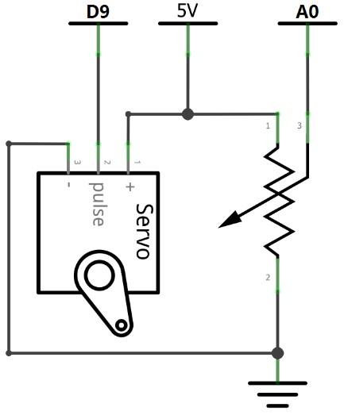
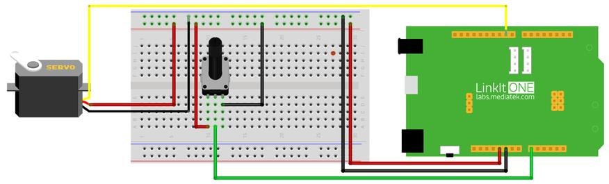

What We're Doing
Servo motor (servo) is commonly used in small robots and other machines to control angular position. It is wrapped by a small gear box, and positioned by the timing control pulses. In this section we control the angular position of the mini servo with the help of potentiometer.
Things you need
Schematic

Connection

Code
Please click on the button below to download the code for the kit:

You can unzip the file to the Examples folder of your Arduino IDE.
To access the demo code open:
File -> Examples -> Starter Kit for LinkIt -> Basic -> L7_Servo
#include <Servo.h> Servo myservo; // create servo object to control a servo int potpin = A0; // analog pin used to connect the potentiometer int val; // variable to read the value from the analog pin void setup() { myservo.attach(9); // attaches the servo on pin 9 to the servo object } void loop() { val = analogRead(potpin); // reads the value of the potentiometer (value between 0 and 1023) val = map(val, 0, 1023, 0, 179); // scale it to use it with the servo (value between 0 and 180) myservo.write(val); // sets the servo position according to the scaled value delay(15); // waits for the servo to get there }
Troubleshooting
Making it better
If the mini steering worked, we can adjust the speed of rotation by using a potentiometer. Upload the following code to produce different functionality.
To access the demo code open:
File -> Examples -> Starter Kit for LinkIt -> Extend_Lesson –> L7_Servo_Speed
More ideas
How do you control two servo motors simultaneously so that you can make a robot?
Reference